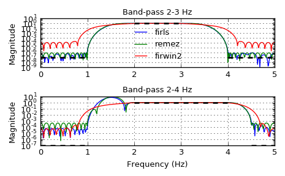

scipy.signal.firls¶
-
scipy.signal.firls(numtaps, bands, desired, weight=None, nyq=1.0)[source]¶ FIR filter design using least-squares error minimization.
Calculate the filter coefficients for the linear-phase finite impulse response (FIR) filter which has the best approximation to the desired frequency response described by bands and desired in the least squares sense (i.e., the integral of the weighted mean-squared error within the specified bands is minimized).
Parameters: numtaps : int
The number of taps in the FIR filter. numtaps must be odd.
bands : array_like
A monotonic nondecreasing sequence containing the band edges in Hz. All elements must be non-negative and less than or equal to the Nyquist frequency given by nyq.
desired : array_like
A sequence the same size as bands containing the desired gain at the start and end point of each band.
weight : array_like, optional
A relative weighting to give to each band region when solving the least squares problem. weight has to be half the size of bands.
nyq : float, optional
Nyquist frequency. Each frequency in bands must be between 0 and nyq (inclusive).
Returns: coeffs : ndarray
Coefficients of the optimal (in a least squares sense) FIR filter.
See also
Notes
This implementation follows the algorithm given in [R218]. As noted there, least squares design has multiple advantages:
- Optimal in a least-squares sense.
- Simple, non-iterative method.
- The general solution can obtained by solving a linear system of equations.
- Allows the use of a frequency dependent weighting function.
This function constructs a Type I linear phase FIR filter, which contains an odd number of coeffs satisfying for \(n < numtaps\):
\[coeffs(n) = coeffs(numtaps - 1 - n)\]The odd number of coefficients and filter symmetry avoid boundary conditions that could otherwise occur at the Nyquist and 0 frequencies (e.g., for Type II, III, or IV variants).
New in version 0.18.
References
[R218] (1, 2) Ivan Selesnick, Linear-Phase Fir Filter Design By Least Squares. OpenStax CNX. Aug 9, 2005. http://cnx.org/contents/eb1ecb35-03a9-4610-ba87-41cd771c95f2@7 Examples
We want to construct a band-pass filter. Note that the behavior in the frequency ranges between our stop bands and pass bands is unspecified, and thus may overshoot depending on the parameters of our filter:
>>> from scipy import signal >>> import matplotlib.pyplot as plt >>> fig, axs = plt.subplots(2) >>> nyq = 5. # Hz >>> desired = (0, 0, 1, 1, 0, 0) >>> for bi, bands in enumerate(((0, 1, 2, 3, 4, 5), (0, 1, 2, 4, 4.5, 5))): ... fir_firls = signal.firls(73, bands, desired, nyq=nyq) ... fir_remez = signal.remez(73, bands, desired[::2], Hz=2 * nyq) ... fir_firwin2 = signal.firwin2(73, bands, desired, nyq=nyq) ... hs = list() ... ax = axs[bi] ... for fir in (fir_firls, fir_remez, fir_firwin2): ... freq, response = signal.freqz(fir) ... hs.append(ax.semilogy(nyq*freq/(np.pi), np.abs(response))[0]) ... for band, gains in zip(zip(bands[::2], bands[1::2]), zip(desired[::2], desired[1::2])): ... ax.semilogy(band, np.maximum(gains, 1e-7), 'k--', linewidth=2) ... if bi == 0: ... ax.legend(hs, ('firls', 'remez', 'firwin2'), loc='lower center', frameon=False) ... else: ... ax.set_xlabel('Frequency (Hz)') ... ax.grid(True) ... ax.set(title='Band-pass %d-%d Hz' % bands[2:4], ylabel='Magnitude') ... >>> fig.tight_layout() >>> plt.show()
